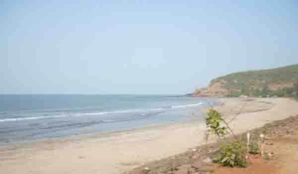

Diveagar beach is a six km long stretch with white sand and clear water. One end of the beach has a fishing settlement while the other end has a sanctuary to the migratory seagulls feasting in the creek waters. The beach is surrounded by Suru trees, while the access to the beach has a dense cover of Belu trees. Diveagar is situated approximately 5 Kms from Shrivardhan.
At one end of the beach, a stream enters the sea. On the other side, there is a Sea birds sanctuary. Suru and Belu trees beyond the beach carry cool breeze into the villages.Another special feature of the beach is the presence of unique sand bubble crab on this beach. You may find some eggs hatching as well.
The breathtaking view of the sunset at Diveagar is something never to be missed. The best time to visit Diveagar is between October and February when the temperature is usually around 15°C.